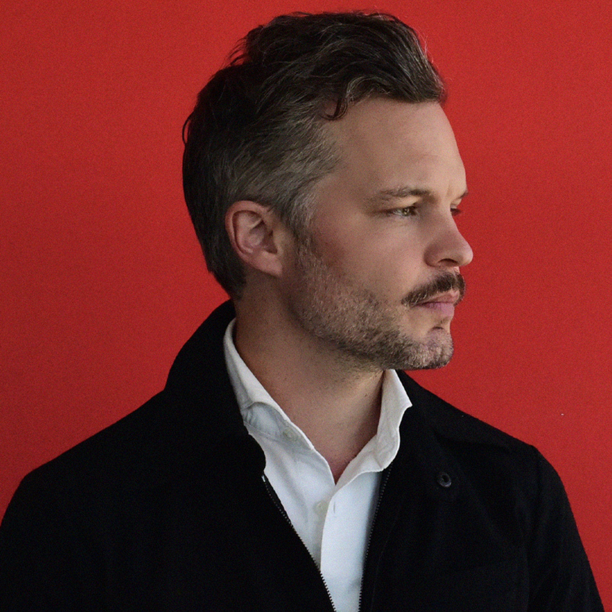
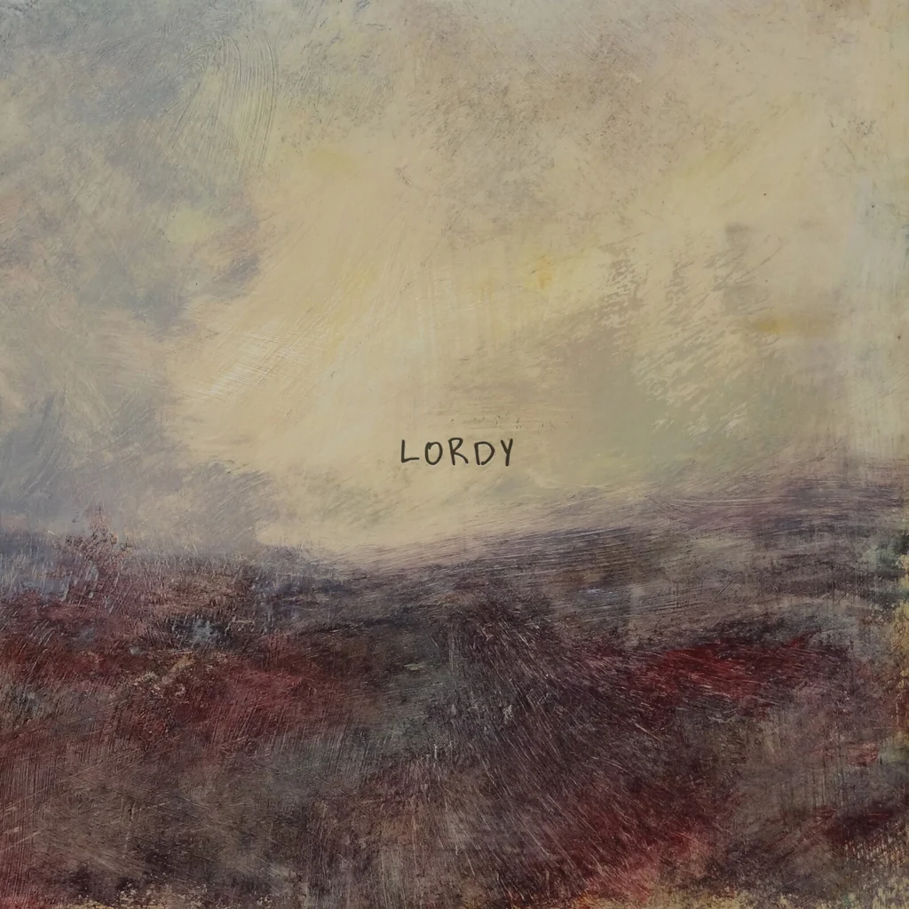

what are you doing?
this is a now page. if you have your own site, you should make one too!
my life is often busy, and i've been somewhat secretive when sharing details with family and friends. i thought this would be a great way to keep everyone updated on what i'm currently doing. i'll do my best to keep this page updated with any new happenings. thank you, Phillip Ridlen, for inspiring me with your now page!
this is what i'm doing as of June 30th 2026
‣ see what i have been up to previously
life 🌟

i have been dealing with a pretty deep depression lately... i have been programming my whole life and now these ai models are getting better at my job than i am, which has given me a genuine existential crisis. but at least the LiTHe Hax summer meetup was a bright spot... we hacked on things, played games, sat in the sauna and just talked about things. it was really nice to see those people again, they are genuinely good friends. today i am going to prague with some other friends i have not traveled with in a while, which i am looking forward to. i burnt out recently, which is almost comical given how much more i was doing in the past. maybe it was the result of removing too many engagements at once, i do not know. i am trying to recover and it feels like things are moving in the right direction, but i have never procrastinated this much in my life and that brings its own kind of stress. went to a markus krunegård concert in motala with two close friends, which was great. i found out ludum dare is ending in 2028 and that hit harder than i expected. i started doing it in 2013 and kept at it twice a year until just recently, so there is a deep emotional connection to that event. my health got a lot worse this month, which seems to be a nervous system problem, and being vegan with low b12 is probably not helping. i am actively trying things to feel better, went to the hospital, but apparently full recovery could take up to two years, according to my doctor. so that is where that is at. :-)-:
work 💼
Opera Software
almost everyone on my team is on vacation, so i am picking up a lot of mixed things that need doing and working on side projects that normally get pushed aside. i am also helping the summer interns and doing ai experimentation with different models and tooling.
hobbies ⚙️
programming
i rewrote my compiler coff from scratch for something like the sixth time, and now coff is the compiler that produces the language c0. i also started rewriting my operating system moonshot from scratch a little over a month ago. you can read about both at the moonshot page. i made a bunch of changes to my personal website and built the moonshot and coff project site, and i have been working on some smaller things that are not really worth talking about yet.
music
songs played
2621 plays
daily average
97 plays
biggest listening day
july 21st with 187 plays
top artist

The tallest man on earth
top album

Lordy by Houndmouth
top song
Special by Emelie Trahan
last played
Liminal by Mishi Holm
expert progress 🎓
the concept of reaching 10,000 hours to become a professional or an expert in a field is derived from Malcolm Gladwell's book "Outliers: The Story of Success". gladwell popularized the idea that achieving a high level of proficiency in any field typically requires about 10,000 hours of dedicated practice. this notion is based on the research of psychologist Anders Ericsson, who studied the practice habits of elite performers in various domains. i've been tracking my programming time since 2019, i officially crossed the 10,000-hour mark. the actual total is likely higher, considering i wrote my first program before i started tracking my time! please note that i include this jokingly; i don't necessarily believe in the idea of becoming an expert after 10,000 hours. i haven't given it much thought, and i certainly don't feel like an expert yet. that said, if you are feeling generous, you may now officially refer to me as an expert programmer.